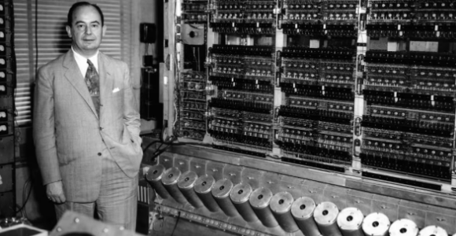
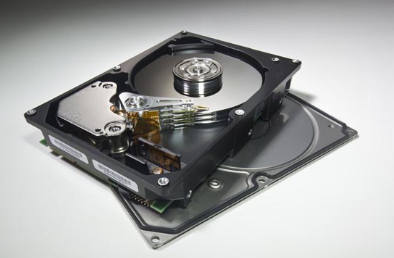

ADM
Arquitectura de maquinas - Contenido y material del curso
Estructuras de computadoras
A que nos referimos cuando hablamos de estructura de computadoras?
La estructura de una computadora se refiere al conjunto de componentes fisicos (hardware) y la manera en que se comunican entre si para ejecutar instrucciones y procesar datos. Esta organizacion se basa en el modelo propuesto por John von Neumann , que hasta hoy sigue siendo el fundamento de la mayoria de los sistemas informaticos.
Cuales son sus componentes?
Unidad central de procesamiento (CPU)
Es el cerebro de la computadora. Se encarga de ejecutar instrucciones y controlar el funcionamiento del resto del sistema.
Dentro de la CPU hay dos partes clave:
Unidad de Control (UC):
Dirige el flujo de datos entre los demas componentes. Interpreta las instrucciones y las ejecuta.
Unidad Aritmetico-Logica (ALU):
Realiza operaciones matematicas y logicas.
Memoria principal
Almacena temporalmente datos e instrucciones que la CPU necesita mientras trabaja. El tipo mas comun es la RAM, que es rapida pero volatil (pierde los datos al apagar el sistema).
Memoria secundaria (almacenamiento)
Es el lugar donde se guardan los datos de forma permanente o a largo plazo. Ejemplos: discos duros, SSD, unidades USB, etc. Aunque es mas lenta que la memoria RAM, tiene mayor capacidad.
Buses
Son canales que permiten la transmision de datos entre los diferentes componentes. Existen tres tipos:
Bus de datos:Transporta la informacion.
Bus de direcciones: Indica donde se debe enviar o buscar la informacion.
Bus de control:Coordina las senales de control entre dispositivos.
Hablemos sobre el modelo Von Neumann y las bases fundamentales de la arquitectura de computadoras!
El modelo de Von Neumann fue propuesto por el matematico y cientifico John von Neumann en 1945. Este modelo describe la forma en que una computadora debe estar estructurada para procesar datos e instrucciones de forma logica y secuencial.
Importancia del modelo
Estandarizo el diseno de computadoras,
haciendo posible la creacion de maquinas universales programables.
Facilito el desarrollo delenguajes de programacion y sistemas operativos,ya que impuso una logica secuencial y clara.
Su enfoque de almacenar datos e instrucciones en la misma memoria simplifico mucho el hardware de las primeras computadoras.
Limitaciones
Cuello de botella de Von Neumann: ocurre porque el bus entre la CPU y la memoria es compartido para datos e instrucciones, lo que puede hacer lenta la comunicacion.
Seguridad:como las instrucciones son datos, puede ser vulnerable si datos maliciosos se ejecutan como codigo.
El modelo de Von Neumann es fundamental para entender como funcionan las computadoras actuales. A pesar de sus limitaciones, su simplicidad y eficiencia lo han hecho perdurar como base de la mayoria de las arquitecturas modernas.
Estructuras de arduinos
Estructura basica de un Arduino
Microcontrolador (MCU)
Es el "cerebro" de la placa. Por ejemplo, en el Arduino Uno se usa el ATmega328P. Se encarga de ejecutar el codigo cargado desde la computadora, controlar pines,
gestionar la comunicacion, etc.
Memoria
Flash:donde se guarda el programa cargado.
SRAM: memoria de trabajo(variables).
EEPROM:memoria no volatil para guardar datos incluso sin energia.
Pines de entrada/salida (I/O)
Digitales (0-13):para encender LEDs, leer botones, activar reles, etc.
Analogicos (A0-A5):
para leer sensores que entregan senales variables.
Algunos pines tienen funciones especiales como PWM (modulacion por ancho de pulso).
Regulador de voltaje
Convierte la energia de entrada (por ejemplo, 9V desde un adaptador) a 5V o 3.3V necesarios para el funcionamiento del microcontrolador.
Puerto USB
Se utiliza para cargar el programa desde la computadora y tambien para comunicacion serial con el PC (monitor serial).
Cristal oscilador
Establece la frecuencia de trabajo del microcontrolador (por ejemplo, 16 MHz en el Uno).
Conectores de alimentacion
Permiten alimentar el Arduino desde fuentes externas (baterias, adaptadores, etc.).
LEDs integrados
Indicadores basicos de encendido y el pin digital 13 que generalmente se usa como prueba inicial (blink).
Por que es importante conocer la estructura de un arduino?
Conocer la estructura de un Arduino es importante porque te permite entender
como funciona y como interactuar con el hardware de manera eficiente. Saber para que sirve cada parte de la placa (como el microcontrolador, los pines digitales y analogicos, el regulador de voltaje, o el puerto USB) te ayuda a conectar sensores, motores, pantallas y otros componentes correctamente. Tambien te permite identificar errores y resolver problemas,
ademas de aprovechar al maximo las capacidades del dispositivo al programarlo.
Arduino se puede ocupar para una gran variedad de proyectos practicos y educativos. Se utiliza para automatizar tareas en el hogar, como encender luces con sensores de movimiento o controlar la temperatura de una habitacion. Tambien permite leer datos de sensores como temperatura, humedad, gas, luz o ultrasonido,
y actuar segun esos datos. Es muy util para controlar motores, servos o mecanismos en robots, puertas automaticas o vehiculos. Ademas, se puede usar para crear sistemas de alarma o seguridad con sensores y notificaciones. Es ideal para hacer prototipos rapidos o proyectos escolares, ya que permite controlar entradas y salidas fisicas facilmente. Arduino tambien puede comunicarse con modulos externos como Bluetooth, WiFi o pantallas, lo que lo hace perfecto para sistemas domoticos,
estaciones meteorologicas o monitoreo remoto. Por su versatilidad y facilidad de uso, es muy usado en educacion, carreras tecnicas e
ingenieria, asi como por hobistas y desarrolladores.
Estructura del sistema de almacenamiento
Que es el sistema de almacenamiento?
Es el conjunto de componentes fisicos y logicos encargados de guardar datos, preservar informacion y permitir el acceso eficiente a estos datos cuando se necesitan. A diferencia de la memoria RAM o la cache, que son volatiles y temporales,
el almacenamiento esta diseñado para mantener la informacion de forma permanente o persistente.
Tipos de niveles de almacenamientoEl almacenamiento se organiza en diferentes niveles jerarquicos, cada uno con caracteristicas distintas:
1.Almacenamiento primario
Incluye memorias como:
RAM: de acceso rapido, volatil, se usa mientras se ejecutan los programas.
Cache: aun mas rapida, situada entre el CPU y la RAM, sirve para acelerar el acceso a datos frecuentes.
Registros: dentro del CPU, extremadamente rapidos y muy pequeños.
Este nivel no retiene los datos una vez apagado el sistema.
2.Almacenamiento secundario
Incluye dispositivos que almacenan datos de forma permanente:
Discos duros (HDD):baratos y con gran capacidad, pero mas lentos.
Unidades de estado solido (SSD):mas rapidas y resistentes, pero mas caras por GB.
Unidades opticas (CD/DVD): usadas menos hoy, pero sirven para distribucion de contenido.
Memorias flash(USB,SD):portatiles y practicas para transporte de archivos.
Este nivel es persistente, y es el principal medio para guardar el sistema operativo, aplicaciones y archivos del usuario.
3.Almacenamiento terciario o masivo
Usado para copias de seguridad, archivos antiguos o almacenamiento en gran escala:
Cintas magneticas (en centros de datos)
Almacenamiento en la nube (servidores remotos)
Este tipo de almacenamiento es mas lento pero economico para grandes cantidades de datos.
Sistema de archivos
Es la estructura logica que organiza los datos dentro de los dispositivos de almacenamiento. Algunos ejemplos de sistemas de archivos son:
-FAT32, exFAT, NTFS(Windows)
-ext4(Linux)
-APFS,HFS+(macOS)
Permiten dividir el almacenamiento en carpetas, asignar nombres a archivos, gestionar permisos, controlar el uso de espacio, entre otras funciones. Sin un sistema de archivos, no se podria acceder de manera ordenada a la informacion almacenada.
Interfaces y buses de comunicacion
Un bus es un conjunto de lineas fisicas (cables o pistas del circuito) que transportan señales electricas. Hay varios tipos:
-Bus de datos: Transfiere los datos reales entre el procesador, la memoria y el almacenamiento.
-Bus de direcciones: Transporta la direccion de memoria donde deben ir o buscarse los datos.
-Bus de control: Lleva señales de control como lecturas, escrituras, interrupciones, etc.
Tambien existen buses o interfaces como:
-SATA(para HDD y SSD)-NVMe sobre PCle(SSD de alta velocidad)
-USB(almacenamiento externo)
-IDE(obsoleto, usado en equipos antiguos)
Estas interfaces determinan la velocidad de transferencia, la compatibilidad y el tipo de conexion.

La importancia de una buena estructura de almacenamiento radica en que permite un acceso rapido a los datos, lo cual mejora la eficiencia del sistema y la experiencia del usuario. Ademas, reduce el riesgo de perdida o corrupcion de archivos, lo que protege la informacion valiosa. Una estructura bien organizada tambien ofrece mayor seguridad, mediante el uso de particiones o cifrado, y contribuye a un mejor rendimiento general del sistema. Finalmente, promueve una mayor vida util de los dispositivos de almacenamiento, gracias a buenas practicas de lectura y escritura que evitan un desgaste innecesario del hardware.
Estructura a nivel Software
La estructura a nivel de software se refiere a la organizacion logica de los componentes del software dentro de un sistema informatico. Esta estructura determina como se disena, se comunica y se ejecuta el software sobre el hardware,
y afecta directamente la eficiencia, escalabilidad y mantenimiento del sistema.
Capas principales
Firmware
Es el software basico que esta almacenado directamente en el hardware (como una ROM). Controla funciones esenciales del dispositivo, como el encendido,
la comunicacion entre componentes y la inicializacion del sistema. Ejemplo: BIOS o UEFI.
Sistema operativo (SO)
Es el software base que administra los recursos de hardware y proporciona servicios a otros programas. Gestiona la memoria, los procesos,
los dispositivos de entrada/salida y el almacenamiento. Ejemplos: Windows, Linux, macOS.
Drivers o controladores
Son programas que permiten al sistema operativo comunicarse con el hardware especifico, como impresoras, tarjetas graficas, o discos duros. Sin drivers, el SO
no puede interactuar correctamente con los dispositivos.
Middleware
Es una capa intermedia entre el sistema operativo y las aplicaciones, que facilita la comunicacion entre distintos programas o componentes. Ejemplos: servidores de aplicaciones, motores de bases de datos, APIs.
Aplicaciones de usuario
Son los programas que utiliza el usuario final: navegadores, editores de texto, videojuegos, sistemas contables, etc. Estas aplicaciones se apoyan en todas las capas anteriores para funcionar correctamente.
Importancia de una buena estructura de software
Una estructura bien definida permite que el software:
Sea modular, es decir, que pueda ser dividido en partes independientes y reutilizables.
Sea mantenible, facilitando las actualizaciones y correccion de errores.
Permita escalabilidad, adaptandose al crecimiento del sistema o la carga de usuarios.
Tenga mayor rendimiento,
al optimizar la comunicacion entre software y hardware.
Garantice seguridad y estabilidad, reduciendo fallos y vulnerabilidades.
La estructura a nivel de software es fundamental para el funcionamiento eficiente de una computadora, ya que organiza de forma logica los distintos componentes que interactuan con el hardware. Desde el firmware que controla funciones basicas hasta las aplicaciones que usa el usuario final,
cada capa cumple un rol especifico en el sistema. Una buena organizacion del software permite mayor rendimiento, facilita el mantenimiento, mejora la seguridad y asegura que el sistema sea escalable y adaptable a nuevas necesidades.
Por eso, entender esta estructura es clave tanto para el desarrollo como para la optimizacion de sistemas informaticos.